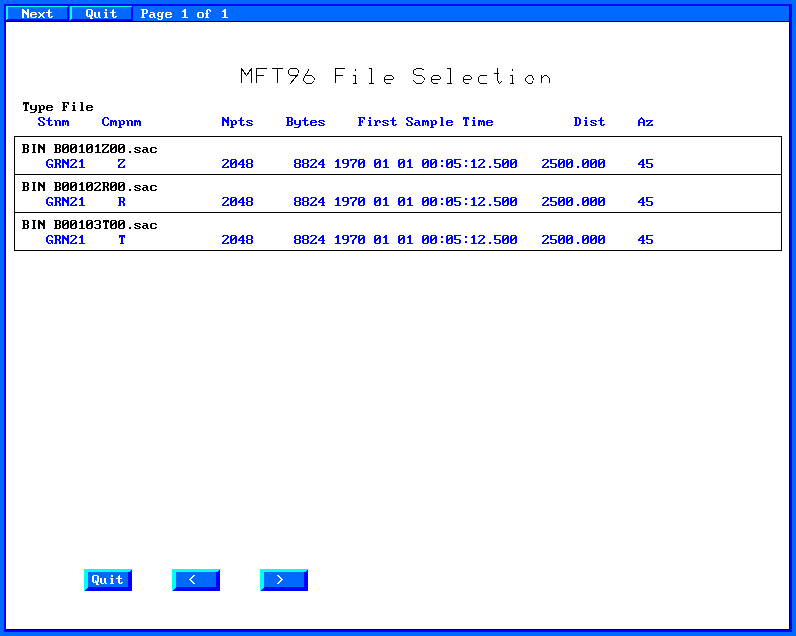
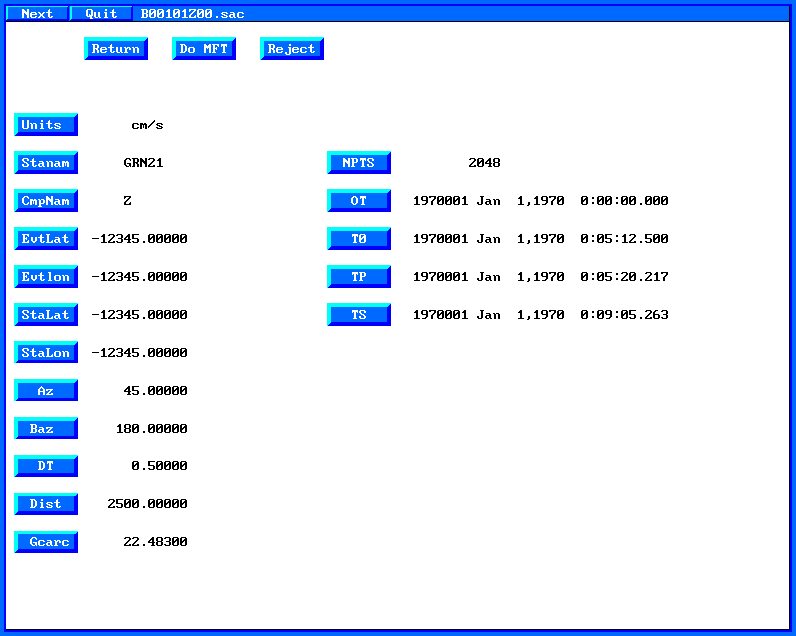
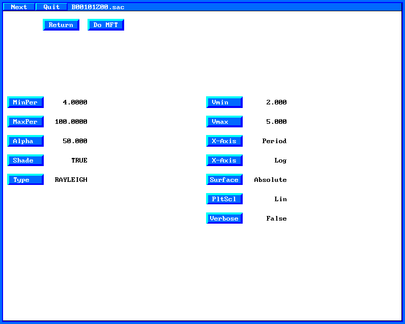
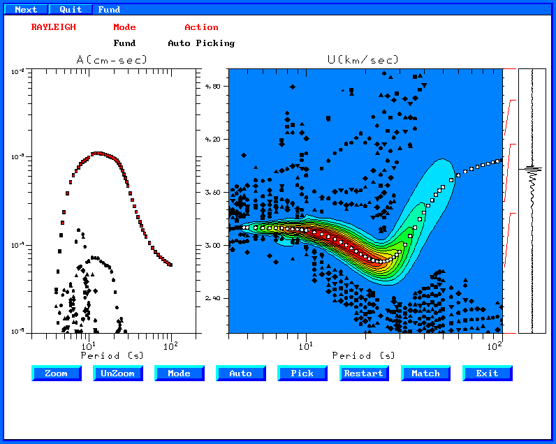
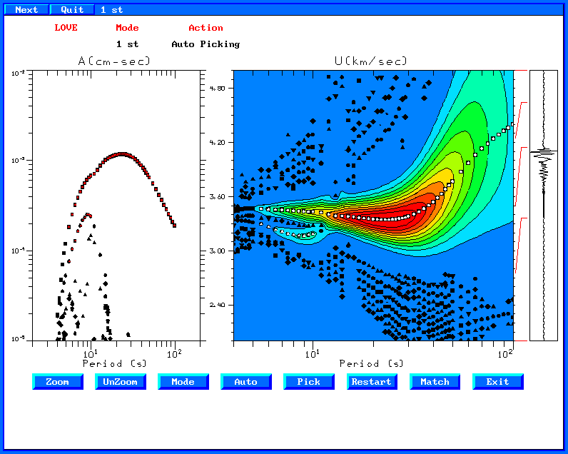
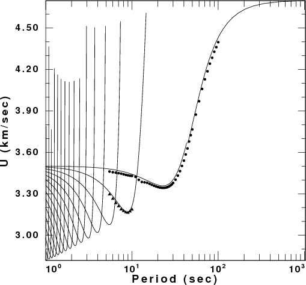
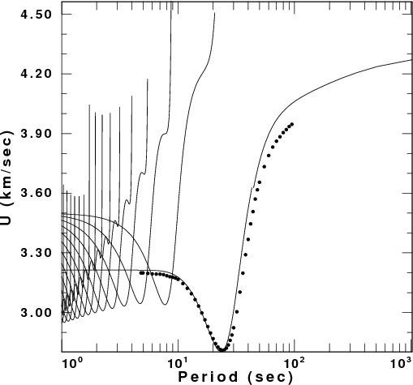
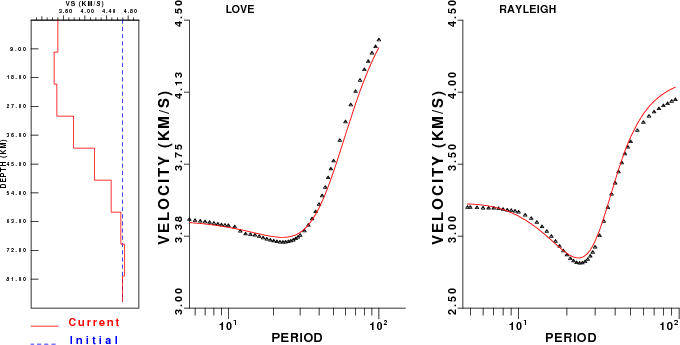
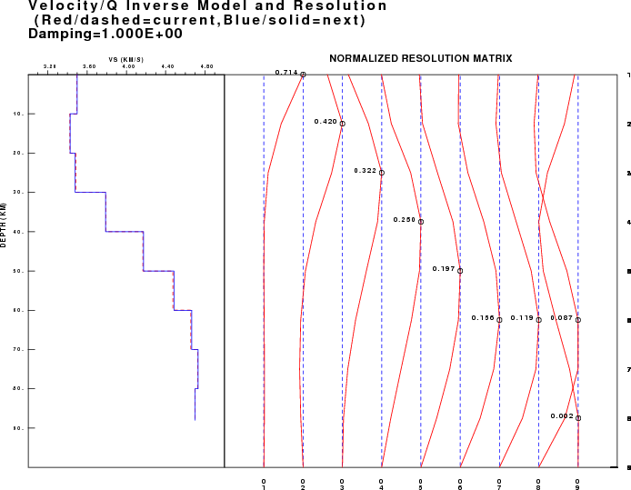
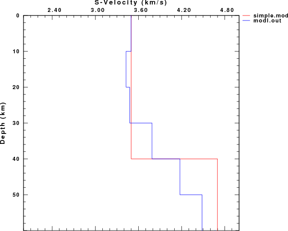

This lesson creates some synthetic seismograms by surface wave
model superposition. The user is request to determine the group
velocities through the use of the interactive program do_mft. The
observed dispersion is then inverted to determine the velocity new
velocity model which is then compared to the original model.
I
create the directory LessonA and
place the scripts DOIT,
and DOCLEAN in that directory.
For
testing everything is in the tarball LessonA.tgz
. Unpack this with the command gunzip
-c LessonA.tgz | tar xvf - This
will create the directory LessonA and place the file 00README
and the scripts DOIT
and DOCLEAN
in that directory.
When you run this script, surface-modal superposition is used to create a synthetic seismogram at a distance of 2500 km for a source with a depth of 10 km and with a faulting model of strike=45, rake=45 and dip=45. For this source depth and mechanism, the Rayleigh wave signal is simple in that the fundamental model spectrum is smooth.
After the synthetics are computed the program do_mft is started using the command
> do_mft *.sac You will see the following graphical menu:

Now
first select the vertical trace, B00101Z00.sac. Since this is the
vertical, you will determine the Rayleigh wave group velocity. The
next page tells you a lot about the trace and requires you to define
the units. Click on "Units" and select cm/s from the
menu. When you are done, click on the "Do MFT" button
to go to the next page.

On
this page click on the "Type" button to define "Rayleigh"
You can also change the filter parameter "Alpha" or the
plotting parameters with the other buttons. When you are done, click
on the "Do MFT" button. At this point the FORTRAN
program sacmft96 is executed to create the dispersion
information.

When
sacmft96 is done, you will be presented with a graphical menu.
Group velocity analysis consists of narrow bandpass filtering the
trace, and then finding the ten largest values of the envelope. The
objective of this page is to permit you to visually edit those values
to define the dispersion curve.
Clicking on the "Auto"
button will ask you to define the mode, here Fundamental. Auto means
that clicking on the dispersion window will initiate a "rubber
band" for selecting the dispersion. A second mouse click will
select the dispersion values nearest the rubber band line. When
you are done, click on "Exit" and then select "Yes"
to save the dispersion values.

Now
process the radial component and the transverse component,
remembering to denote the dispersion on the transverse component as
"Love". Here is the Love wave dispersion selected. Note
that I also clicked on "Mode" and then continued selecting
values to define the first higher mode dispersion.

The shell script now compares the selected dispersion to the theoretical dispersion for the model. This is a very useful exercise since we can learn something about the imperfections of the multiple filter analysis used to get the group velocities:
|
Comparison of theoretical and observed group velocities |
|
|
Love Wave Comparison |
Rayleigh Wave Comparison |
|
 |
 |
We see that the group velocities are well determined at
shorter periods, but that there are problems with the Rayleigh wave
dispersion at longer periods. This may be a problem in the
synthetics, or a problem in the choice of the filter parameter
"Alpha" used, here a value of 50.
The dispersion data are now used to invert for a velocity
structure. To emphasize the lack of uniqueness in the surface-wave
inversion, the initial model is a layered halfspace. This unbiased
upper mantle model is used since we expect crustal velocities to be
lower. A smoothing operator in the inversion will preclude the
determination of a sharp Moho. If we had started with a constant
velocity model with crustal velocities, then the inversion would lead
to an unrealistically low velocity zone in the mantle, because of the
limited surface-wave resolution at those depths.
The
surface-wave inversion is run iteratively until the solution has
converged sufficiently (sufficiently is an imprecise term, but it is
the user's choice as to the meaning of a good fit). The starting
model (blue) and inverted model (red) are indicated as well as the
observed and theoretical dispersion. This is a good least squares fit
since.

We
can also plot the resolution kernels for the inversion. Except for
the deepest depths, the model is resolved, although the kernels
suggest that the layering was too thin because the kernels are wider
than the layer thicknesses.

After the inversion is completed, we have several velocity model
files available: simple.mod - the true model used to create
the synthetics and modl.out - the output of the inversion.
I can compare these models using the command
shwmod96 -LEG -K -1 simple.mod modl.out
which creates the graphics file SHWMOD96.PLT . I convert this to encapsulated PostScript and Portable Network Graphics using the commands
plotnps -F7 -W10 -EPS -K < SHWMOD96.PLT > shwmod96.eps convert -trim shwmod96.eps shwmod96.png
Here the program convert is part of the ImageMagick package on
LINUX/CYGWIN. You will see that our dispersion define the upper
crust well, but the dispersion data were not able to define the sharp
Moho discontinuity of the true model because of limited resolution
and also the model smoothing used for the inversion.

After you are done testing these programs, enter DOCLEAN to clean up the directory. You will be left only with the 00README, DOIT and DOCLEAN files.
Modify the script so that the source depth is 30 km, the faulting
mechanism has strike 9, dip 90 and rake 0. Then run the script.
In this case you will notice that the Rayleigh wave signal on the
vertical and radial components has a spectral hole. This lack of a
smooth spectrum makes the dispersion hard to follow near the period
of the spectral. You can experiment when running do_mft by
changing the filter parameter alpha - a smaller value
provides more timing resolution at the expense of frequency
resolution.
You might also start the inversion program with
another model, instead of the uniform halfspace used here.